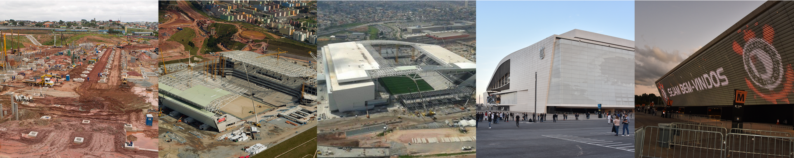

CORINTHIANO, MALOQUEIRO E SOFREDOR
CASA DO POVO
Maio de 2014 foi mais uma data histórica para o Sport Club Corinthians Paulista. No dia 10 daquele mês, a Fiel podia, enfim, chamar um lugar de casa: a Neo Química Arena era inaugurada com a realização de um jogo marcante: Corinthians x Corinthians, com a participação de mais de 100 ex-jogadores do Timão
